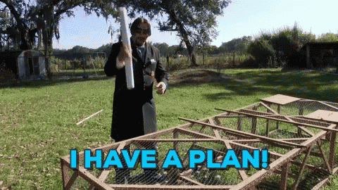

In software development, creating robust and maintainable application is a top priority. To achieve this, developers often rely on architectural patterns that guide them in organizing their code effectively.
One of the most popular architecture patterns is the Model-View-Controller (MVC) architecture

What is MVC?
MVC architecture separate our application into 3 main components
- 1. Model
- 2. View
- 3. Controller
I'll explain each one of this components in a bit, for now let's see the benefits of using MVC architecture
Why MVC?
MVC architecture works as a blueprint for our application that will help us and our team to have a more organized, cleaner, and flexible code
And yes... It will be easier to find and fix bugs üëæ. Let's see what are some of the main advantages of using an MVC architecture pattern:
-
Separation of Concerns
Makes easier to manage and maintain our code
-
Reusability
We can reuse these components across different parts of our application or even in another projects
-
Scalability
Ass our application grows, we can add more VIEWS or MODELS without crashing the functionality
MVC as a Blueprint for a House üè†
I like to think of MVC as building a house from scratch. You wouldn't start hammering nails and stacking bricks randomly. Instead, you'd begin with a detailed blueprint, that outlines every aspect of the house's design.
This blueprint serves as a guide through the construction process, ensuring that everything is well-organized, efficient, and built to last
-
Model as the Foundation
Just as the foundation determines the house's stability, the MODEL defines the logic and data structure of the application
-
View as the Aesthetic Design
It's what make the house visually appealing, the interior design and exterior appearance. The VIEW is responsible for presenting data to the user in an aesthetically and user-friendly manner
-
Controller as the Builder
Think of the CONTROLLER as the builder who follow the instructions provided in the blueprint. Like the builder, receives input (blueprint) from the client (user) and coordinates the construction process. Interacts with the foundation (MODEL) and the design (VIEW) of the house
Just as the blueprint serves as the guiding plan for constructing the house, the MVC architecture acts as the guiding pattern for building software application

Model

This is where we write the code that talks to the database. As we use MongoDB as our database, we can use mongoose to help us build the boilerplate for the logic of our application data. Mongoose provides a straight-forward, schema based solution to model our application
The mongoose schema interface defines the structure of our document and the type of data we are storing. Let's see how to build a MODEL for a simple todo application:

View
The VIEW is what the user sees on their browser
The CONTROLLER pass the data into the VIEW, then the VIEW use that data to generate a dynamic HTML allowing interaction to the user
Here we make use of "template languages" like EJS / Handlebars / Nunjucks / React...etc., to display the application and its UI. For our simple todo list application, this is how we pass the data from the CONTROLLER to the VIEW

Controller

The CONTROLLER is the interface that updates the MODEL and the VIEW. We can think of it as the middle man that hears the request from the client side and knows how to process the GET / POST / PUT / DELETE request methods
It can talk to the database through the MODEL if needed, and send the data to the VIEW explaining how to present it to the user

Implementing MVC depends on the programming language and framework you're using. However, the basic principle remain the same, Here is a diagram of how the components interact:

What about the router?

In the figure 1 we saw that before the CONTROLLER we have a ROUTER. The ROUTER is the first touch point that listen the request that comes from the client side
This adds a level of abstraction where we can handle the user requests and know to what controller send those requests. YES ! we can have multiple controllers, so the ROUTER help us to have the separation of concern we talk about at the beginning
Summary

- Browser (Chrome / Firefox / Safari, etc) sends request to the ROUTER who handles the request to the CONTROLLER
- The CONTROLLER interacts with the MODEL to send and receive data
Process GET / POST / PUT / DELETE requests from the user
-
The MODEL interacts with the database. It’s how we add and retrieve items from the database
We can use any databases: MongoDB / MySQL / Oracle, / PostgreSQL, etc …
- The CONTROLLER send the data obtained from the MODEL to the VIEW to explain the presentation to the viewer
-
The VIEW renders the data based on what the CONTROLLER sends (The view is the only thing the user ever sees)
Generates dynamic HTML using the template language we choose: EJS / Handlebars / Pug / Nunjucks / React, etc …
- The VIEW will send its final presentation to the CONTROLLER
- The CONTROLLER send that final data to the user output
Conclusion
By understanding and implementing MVC in our projects, we can build more maintainable and robust applications that stand the test of time. Its clear separation of concerns, reusability, testability, and scalability benefits continue to make it a popular choice among developers.